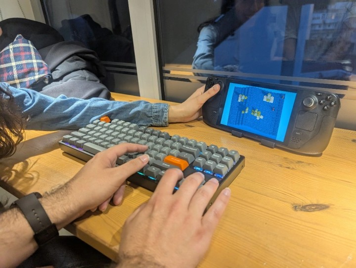

Cubos participation in the Azul Game Jam - the achievements, lessons taken, and much more.
The Jam
Around a month ago, @mcanais, @NunoBaptista, @RiscadoA and @rsubtil joined forces to participate in the Azul Game Jam. This was the first edition of a Portuguese on-site game jam, where the aim was to join the Portuguese game dev community at the AI Hub, to make games during 48 hours. We were a team of 4 - 3 programmers, 1 artist, and a lot of ideas.
The game is playable on the browser, and can be found at itch.io.
Game Development
It is challenging to work with such a barebones engine, but also really satisfying to have so much control over what is made. This year's theme was waves, and we decided to make a sea battle game, where up to 4 players fight until the last standing. The movement was really inspired on Scraps vs Zombies demo, functioning in a grid wise manner, where the player moves a tile at the time, in for possible directions. To fulfill the jam theme, we've included a cellular automata wave that sweeps across the scene. The player's boat slows down when sailing against this wave, or can catch up speed while riding it. The waves are colossal, sometimes sweeping over the islands on the map. With this game mechanic, we'd hoped to add an interesting twist to the genre of Battle Royale.

Voxel Art
As an artist, I produce the voxel assets, including the animations, the tiles of the map, and the wave. Currently, we don't have a voxel editor inside Cubos, so we used MagicaVoxel for this purpose. For the animations, we've used a process very similar to pixel art animation, with a model for each frame. Though not strictly necessary, the boat had several animated parts: the sail and the flag, plus the oarsmen and the oars. The oarsmen also served as a game design purpose -to indicate the number of lives the player had, each time the player took damage, one of the sailors would fly out of the boat. Some decoration was created to bring life to the game's world. Plants, houses, and shipwrecks were designed and modeled, but in the end, never made it to the final cut. Currently, each model has to be imported by hand, and even the meta files and ID have to be manually assigned. The 2-day Jam was a very limited time frame for this level of polish.
Playtest
The game was playtested during the jam's showcase, and it was well received by the community present. A real sense of competition sprout in the players, and fierce fights unfold before our eyes. The game was praised for its engaging gameplay and innovative art style. Some even comment that it locked like pixel art. The voxel resolution and the camera perspective might have helped in this regard.
Few days later the Cubos team took the opportunity to showcase the game in a Game Break event, at Gaming Hub. Developers from Portugal and beyond gather at these Game Break events every mouth at Gaming Hub to showcase their latest work, discuss ideas and network. Ondisseia was again showcased in this last april edition, and again, the feedback was really positive. Some suggestions were made about the aiming system - it seemed to some to be too complicated. Only when the player is sideways to other player, over a minimum of 5 chunks, is it possible to shoot arrows. It was also suggested to use a free movement instead of the grid base one. Maybe the most interesting suggestion was to try and make the game run in mobile (browser).
Android Features
Cubos uses Emscripten to export to WebGL. We already had a build from Emscripten for Azul Game Jam, but the formatting was incompatible with itch.io. This build was made for a single web page and not to be embedded on Itch.io. Therefore, we strived to simplify the HTML and customize the CSS classes to our liking.
There were problems with the way Emscripten controls the canvas. Apart from the usual fullscreen bottom, there was a Resize canvas and Lock/hide mouse pointer, for resizing and hiding the mouse in fullscreen, respectively. We've opted to rewrite these functionalities in a new .JavaScript, but we aim to integrate these better in the future.
After this step, we had a functional WebGL build on Itch.io, though no UI and functionalities for mobile devices had yet been included. The game would open, the sound would play, but there wasn't any interactivity.
To support mobile devices better, new UI elements were created with HTML and CSS. Still, there wasn't any way to connect them with the game code. For this purpose, this JavaScript Function was created to send the bottom's interaction to the game:
function simulateKey(keyCode, isDown) { const event = new KeyboardEvent(isDown ? 'keydown' : 'keyup', { keyCode: keyCode, which: keyCode, bubbles: true, cancelable: true }); document.dispatchEvent(event); }
This combined with this HTML button:
<button class="shoot" ontouchstart="simulateKey(32, true)" ontouchend="simulateKey(32, false)">space</button>
Allowed to interact with the game
Despite this progress, a new problem emerged; now we were stuck with these inputs on the PC. To solve this issue, we added a function to hide the mobile control when no longer necessary:
// Detect if it's a touch device (Android or otherwise) if ('ontouchstart' in window || navigator.maxTouchPoints > 0) { // Detect Android specifically const isAndroid = /Android/i.test(navigator.userAgent); if (isAndroid) { // If it's Android, display the touch controls document.getElementById('touch-controls').style.visibility = 'visible'; document.getElementById('fullscreen-btn').style.visibility = 'hidden'; } }
With this final touch, we were able to hide the extra UI when the game was running on a PC browser and enable the UI in a mobile device browser. After the jam, we integrated these changes into the main branch of Cubos, so that all samples can be easily ported to mobile devices.